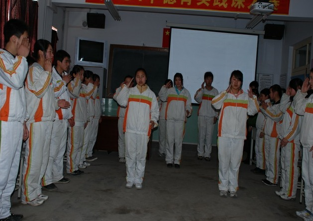

在德育实践中，不少学校的德育课与德育实践活动互相分离。实际上，德育课与德育实践活动各有优劣。若能将两者结合起来，则可优势互补，提高德育的实效性。因此，探究德育课与德育实践活动的结合途径，具有重要的意义。
德育课是指学生在德育教师指引下，在固定的时间、固定的空间，通过某种形式集中、持续的学习体验道德知识、提高道德水平的活动。德育实践活动是指为了培养学生良好的品德，学校根据学生道德水平实际开展的各种直接和间接的德育实践工作的活动。可见，德育课和德育实践活动都是道德教育的途径。但不少德育工作者在处理德育课与德育实践活动的关系时出现了偏差。
